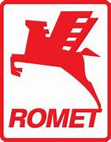

Enzo Ferrari od 1929 roku prowadził stajnię wyścigową o nazwie Scuderia Ferrari i osiągał znaczne sukcesy w wyścigach samochodowych. 1947 – model Ferrari 125 S z silnikiem 1,5 litra V12 (12 cylindrów). Pojazdy cywilne Ferrari, produkowane od 1947 roku, znane ze swego wyszukanego stylu z domu Pininfarina, były i są symbolem luksusu. Ferrari korzystał również z designu innych projektantów, a mianowicie byli to Scaglietti, Bertone i Vignale. Stosunkowo niewielkie silniki 8- i 12-cylindrowe w układzie V, odznaczające się wysokimi osiągami oraz specyficznym brzmieniem i piękny wygląd czynią wozy Ferrari obiektem pożądania. Od wielu lat głównymi konkurentami marki Ferrari są produkty Porsche i Lamborghini. W 2002 roku, kiedy sytuacja przedsiębiorstwa nie miała się najlepiej, Fiat (główny udziałowiec Ferrari) sprzedał 34% akcji bankowi Mediobanca za 768 mln USD. We wrześniu 2006 roku Fiat odkupił 29% akcji i posiadał 85% udziałów. 10% należy do syna Enzo Ferrariego, a pozostałe 5% w 2005 roku odkupił Mubadala Investment Company od banku Mediobanca.
Logo Logo producenta pochodzi z emblematu, jaki miał na swoim samolocie włoski pilot z czasów I wojny światowej, Francesco Baracca. Enzo Ferrari, będąc pod wrażeniem jego umiejętności, użył tego samego symbolu – czarnego rumaka, stojącego na dwóch tylnych nogach. Taki koń jest uważany we Włoszech za symbol szczęścia.
| A | ą | E | ę | Ó | ó | Ć | ć | Ź | ź | Ż | ż | Ś | ś | Ł | ł |  |
|---|